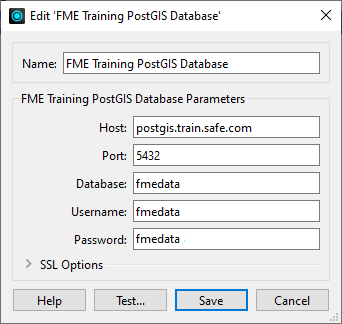
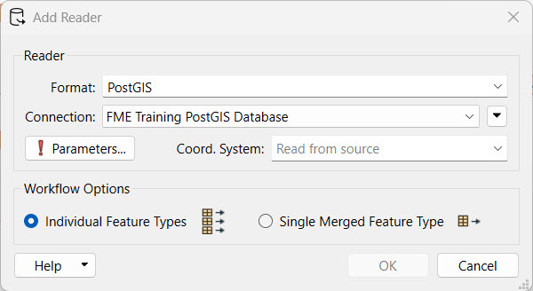
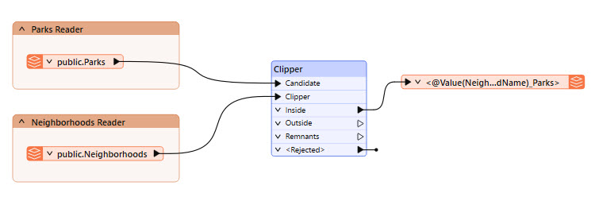
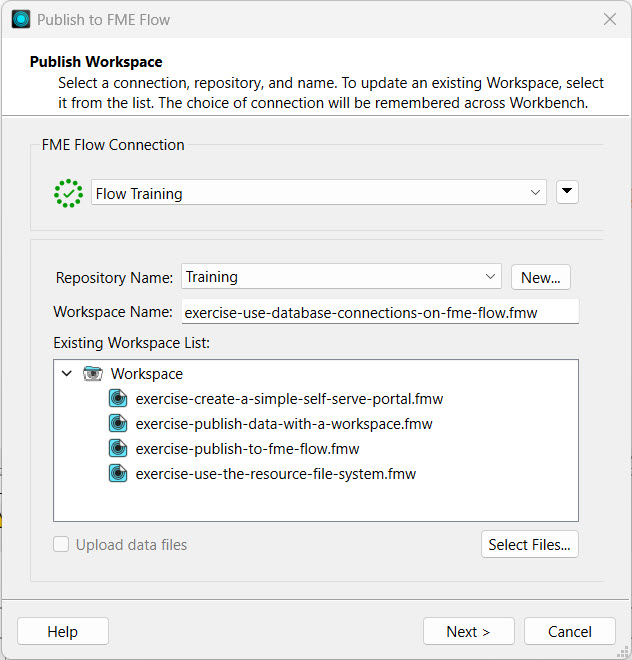
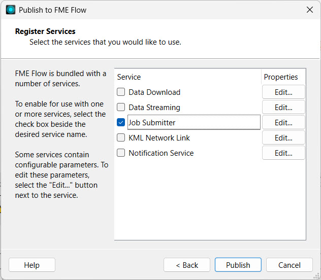
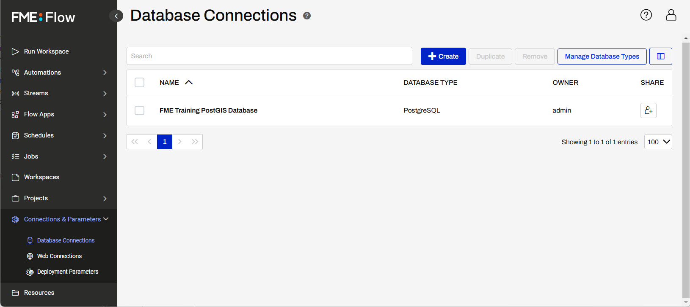
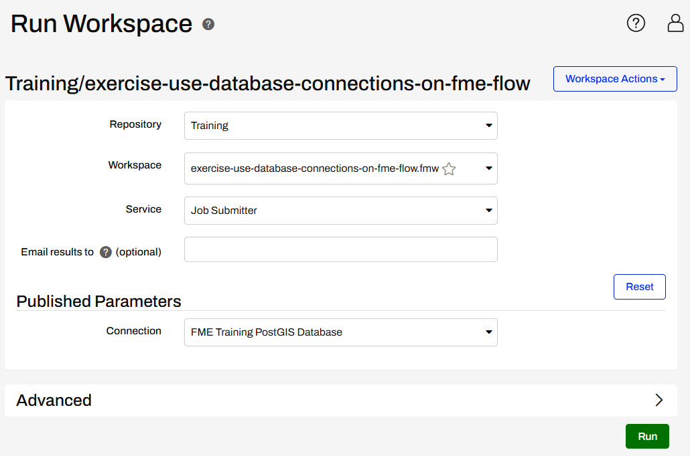

After completing this lesson, you’ll be able to:
For this exercise, you’re adapting a workspace to read data from a PostGIS database. The workspace reads in Parks points and clips them to a layer of neighborhood polygons to store parks in each neighborhood. You’ve built the workspace and are now replacing the Readers to read from the database; the old Readers have already been removed. Then, you must publish the workspace and database connection to FME Flow.
Open the starting workspace in FME Workbench.
The workspace is supposed to read in Neighborhood polygons and Parks point locations, but these Readers haven’t been added yet. For now, there are bookmarks to mark the place of the Readers. The Clipper clips Parks by the Neighborhood boundaries, and the writer feature type writes out a separate layer of schools for each neighborhood. This example workspace uses a NULL writer, which doesn't actually write data.
You can skip this step while taking a Safe Software-hosted training course. The Database Connection FME Training PostGIS Database should already exist on your training machine.
You can connect to databases using Database Connections. Database connections provide a convenient and secure way to store and reuse these connection parameters. Each time you need to use the same connection in a workspace, you can use the saved connection, rather than re-entering the connection parameters. If the connection parameters change, you can edit them in one place rather than in each workspace that uses the connection.
Database Connections require credentials. In a web browser, visit http://fme.ly/database. This shows the credentials for a PostGIS database running on Amazon RDS.
Select Tools > FME Options from the menu bar.
To create a new connection, click the Database Connections category icon and the [+] button. In the "Add Database Connection" dialog, enter the connection parameters obtained through the web browser.
Give the connection a name (you can call it FME Training PostGIS Database) and click Save.

Then click OK to close the FME Options dialog.
If you are unable to enter FME Training PostGIS Database for the Name, that means this connection already exists on your machine. You do not need to create it; you can simply select that existing connection in step 3.
Add a PostGIS Reader using the FME Training PostGIS Database connection.

Open the Parameters, expand Public and select the Neighborhoods and Parks tables.

Click OK to select the tables and then again to add the Reader Feature Types to the canvas.
Place the Readers in their bookmarks and connect them to the Clipper. The Parks reader connects to the Candidate port on the Clipper, and the Neighborhoods reader connects to the Clipper port.

Run the workspace and optionally Save the workspace.
Click Publish in the Toolbar or go to File > Publish to FME Flow. Select your web connection to FME Flow. Select the Training repository to store the workspace in.

If you are taking a Safe Software-hosted training course, your connection to FME Flow should already exist on your training machine. If you need to create a new connection to FME Flow or create the Training repository, you can follow the Publish Workflows to the Web learning path to learn how.
Make sure you upload the FME Training PostGIS Database connection. If the database connection is not present on FME Flow, you won’t be able to read the data from the PostGIS database when running the workspace.

If the database connection already exists on FME Flow, you do not need to publish the connection again unless you have updated the connection details and would like to overwrite the existing one on FME Flow. By default, connections that already exist on FME Flow will not be selected.
Register the workspace with the Job Submitter service and click Publish.

Open FME Flow and navigate to Connections & Parameters > Database Connections. The page should list the database connection we just published with the workspace, any database connections already present on FME Flow, and allow you to create new connections.

Clicking on the connection will open the connection details and allow them to be edited if needed.

We don’t need to edit this connection right now, so click OK to close the connection details page.
Click Run Workspace on the side menu. Select the workspace that was published in Step 6.
Under Published Parameters, the Connection parameter referencing the database connection is visible. The drop-down allows you to select a different connection if desired. Leave FME Training PostGIS Database as the selected connection for this exercise and click Run.

FME Flow uses the database connection to access the Neighborhoods and Parks tables from the PostGIS database and run the workspace successfully.
You can reuse this database connection to run other workspaces on FME Flow, as well as share the connection with other FME Flow users to use it when running their workspaces. The database connection can easily be updated by overwriting the existing connection on FME Flow when publishing or can be edited directly on FME Flow in the Database Connections store.